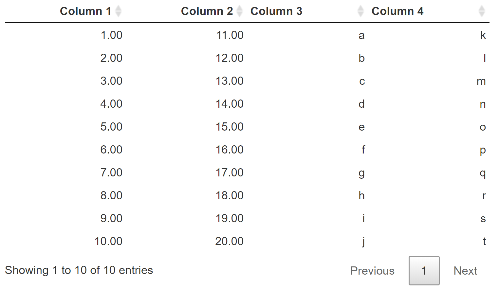

Note that only the currently visible data is exported! If a symbol contains multiple table pages, using a button only affects the currently visible table page! It is recommended to use the native export functionality of MIRO instead.
Tables
Introduction
In this section you can customize the general configuration of input and output tables (global settings) as well as the individual settings of output tables. Tables for individual input symbols are configured in the Input widgets category.
Input Tables (global settings)
Height of input tables
Sets the height of the table. If the table content is higher than the configured height, a scroll bar is displayed.
Restrict editing of tables
Sets all input tables to read-only. No manual edits can be made by the user. Database scenarios or local data can still be loaded.
Column stretching
Sets the general stretch behavior of columns. Available options are no stretch, stretch last column and stretch all columns. Stretched columns mean that the table always fills the entire window width. With large tables, this can have a negative effect on the performance of the application. Columns that are not set to stretch have a default column with of 200px.
Column Widths
Here, the default column with of a single non-streched column (default: 200px) can be adjusted. It is recommended not to choose column widths that are too small, otherwise the table contents may not be displayed correctly.
Output Tables (global settings)
Table style
Output tables can be changed regarding their design. Different designs are available. Example:
Table style: display (default)

Table style: compact
Column Filters
Table filters can be used to search each table column individually for entries. If there are strings in the column, the filter is a text search. For numeric values, a numeric range can be specified as the filter with the help of a slider. The filters can be displayed above or below the table or can be deactivated completely.

Number of Items to Display
Specifies the default value of how many rows should be displayed per table sheet. The value can be changed by the user from the MIRO application.

Show Row Numbers
Determines whether line numbers should be displayed or not.
Output Tables (individual symbols)
Global table settings for can be overwritten for each individual symbol. The available options are almost identical to those of the global settings. The only additional options are the number of decimal places to display and a setting to disable graphics for the symbol. Note that in contrast to the global settings, a symbol-specific configuration needs to be applied by clicking on the corresponding save-button!
Some options for an output symbol table are listed below. For all other options please consult the section for global table settings.
Decimal Places
Adjusts the number of decimal places to display for table columns with numeric values.
Pivot a Column
Allows you to pivot a table column of a symbol, i.e. to
have a new column from each of the elements in this
column. Unlike the
table statement in
the GAMS model itself (Table symbolname;), this option does not affect the
data contract
between GAMS and MIRO. Hence, the columns of the symbol
remain variable, since the symbol itself is communicated
in list format. The pivoting of the configured column
then happens "live" in the MIRO application.
Display no graphic
If no specific graphic is configured for an output symbol, a pivot table is always displayed alongside the table per default. With this option, you can prevent the display of any graphics, so that the symbol is only visualized as a table.